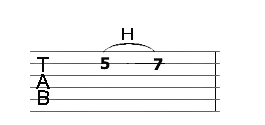
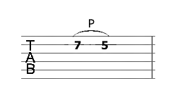

The last few weeks have been pretty heavy with the introduction of the F chord and a multitude of
new songs. Take this week as a breather. If you're pretty busy with life then this could be a welcome
break from your week. If you're light with workload in terms of school/college/work, you may prefer to
skip ahead and come back to this week when you're bogged down with work. Always feel free to take your
lessons at a pace that suits you. If you don't like the songs for the week, look up songs on websites like
Ultimate Guitar. While it's nice
to have a mix of genres, people tend to prefer playing their favourite style of music.
Click the songbook tab to review songs.
Here we'll learn about two commonly used guitar techniques. These are called the
hammer on and the pull off.
To play a hammer on, you must first play a note. Then you must rapidly place a finger on a higher note
(closer to sounding hole on the fretboard). The photo below gives an example. You hold down the fifth
fret and strike the string. Then you place a finger on the seventh fret of the same string quickly. Can
you hear the change in pitch? This is a hammer on. Many tabs you'll see online will denote this as 5h7.

To play a pull off, you must hold a finger down on a fret and play the note. Then you release the note,
leaving either the open string to sound out of a lower pitched string. See the example below. Hold the
seventh fret of the string and play the note. Make sure you have another finger holding the fifth fret
of the same string. Release the finger on the seventh fret without striking the string again. This is a
pull off. You may see this written commonly as 7p5 on tab music.

Try playing them both a few times. You can also play hammer ons and pull offs in rapid succession to add
a little variety to your playing. See this video below to learn a little more about these techniques.
To YouTube